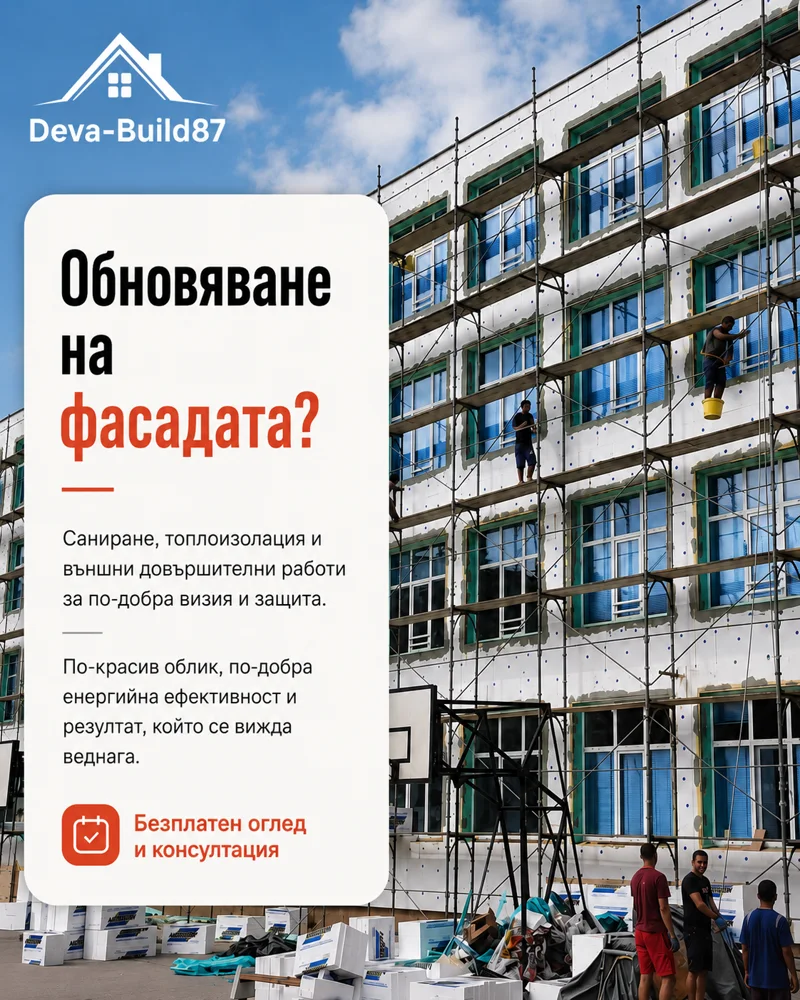

Фасади и саниране, които пестят енергия
Обновяваме визията и енергийната ефективност на сгради в цяла България — от еднофамилни къщи до цели жилищни входове. Сертифицирани системи, прецизен монтаж, писмена гаранция.


Цялостно решение за фасадата на вашата сграда
Санирането не е само нова мазилка — то е система от правилно подбрани материали, положени по технология. Така фасадата изглежда отлично и работи за вас: по-малко разходи за отопление, без влага и напукване.
- Цялостно саниране на жилищни сгради и входове
- Фасадни топлоизолационни системи — EPS и минерална вата
- Минерални, силиконови и силикатни мазилки
- Фасадно боядисване с дълготрайни бои
- Ремонт на тераси, козирки и общи части
- Декоративни облицовки и фасадни детайли
Какво печелите със санирана фасада
До 40% по-ниски сметки
Правилно изпълнената топлоизолация връща инвестицията чрез по-ниски разходи за отопление и охлаждане.
Сертифицирани системи
Влагаме цялостни фасадни системи от един производител — лепило, изолация, мрежа и мазилка, които работят заедно.
Скеле или алпинисти
Разполагаме със собствено оборудване и избираме по-ефективния метод според височината и достъпа.
Гаранция за системата
Писмена гаранция и за труда, и за вложените материали — описана подробно в договора.
Как протича санирането
Оглед и замерване
Замерваме фасадата, оценяваме състоянието ѝ и обсъждаме желаната визия и бюджет.
Система, цвят и оферта
Показваме мостри на мазилки и цветове и изготвяме фиксирана оферта по пера.
Монтаж по технология
Полагаме системата стъпка по стъпка — лепене, дюбелиране, армиране, мазилка.
Приемане и гаранция
Финален оглед заедно с вас, почистен обект и писмена гаранция в договора.
Фасади, които сме обновили


Въпроси за фасадите и санирането
Цената зависи от избраната топлоизолационна система, дебелината на изолацията, вида на мазилката и достъпа до фасадата. След безплатен оглед и замерване получавате точна оферта на квадратен метър.
Еднофамилна къща обикновено отнема 2–4 седмици, а жилищен вход — 4–8 седмици според размера и сложността. Точният график е част от договора.
И двете — изборът зависи от височината, достъпа и обема на работата. При огледа препоръчваме по-ефективния и икономичен вариант за вашата сграда.
Силиконовите мазилки са най-устойчиви на замърсяване и атмосферни условия, минералните са по-икономични и паропропускливи. Ще ви покажем мостри и ще препоръчаме според сградата и бюджета.
Време е сградата ви да заблести
Заявете безплатен оглед — ще замерим фасадата и ще получите точна оферта с мостри на място.